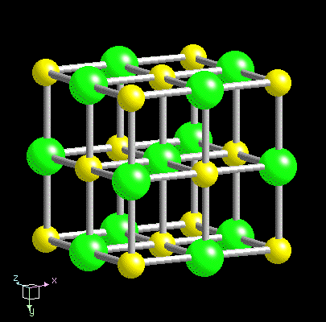
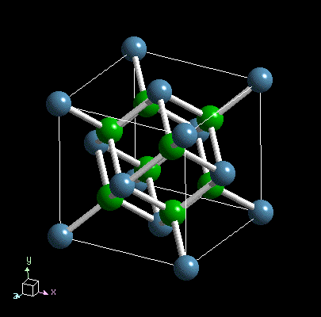
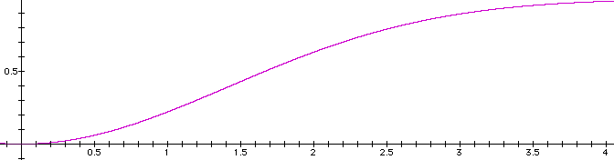

{kind=link}

Crystal Chemistry - Bonding Forces in Crystals
Bonding type is determined by crystal structure (packing) and atom types and ionization state. Physical properties are intimately related to these factors. The table below shows the relationship between valance state, inter-atomic distances, hardness and melting point.
|
|
|
|
|
|
|
|
|
|
|
 |
|
|
|
|
|
|
|
|
|
|
|
 |
Specific bonds can share the character of more than one bond type.
More than one bond type can occur within a crystal structure.
Ionic Bond - Simple attractive force between two ions of opposite charge.
Examples - Halite Na+ and Cl-, Calcite Ca2+ and CO32-, Fluorite Ca2+ and F-.
Bond strength related to 1) the spacing between ions and 2)
amount of
charge.
Covalent Bond - electron sharing bonds (for example one electron pulls double duty for two ions which have an unfilled orbital) - very stable
Certain atoms with large vacancies in the outer orbital (e.g., Si, C) will share electrons covalently with several neighboring atoms to form stable groups.
Example: Diamond C-C spacing is 1.54Å
The type of bonding that takes place between any two ions is in part related to the polarizability of the ion (i.e., distortion of the electric field).
Bonds between Groups Ia and IIVa (alkali-halides) and IIa and IVa (alkalide-earth oxides) tend to be ionic in character.
Atoms close to each other on the periodic table tend to be more covalently bonded.
Electronegativity
Electronegativity is the tendency for an atom to attract a pair of electrons that it shares with another atom. For example, the mineral quartz consists of silicon atoms, Si, and oxygen atoms, O, sharing pairs of electrons. If the pairs of electrons are not shared equally, (i.e., if they spend more time with one atom than with the other) the favored atom is said to be more electronegative. In the case of quartz (SiO2), measurements indicate that the silicon in the silicate group is relatively positive and the oxygen atoms are relatively negative. This means that the electron pairs spend more time with the oxygen atoms than with the silicon atom and thus oxygen is more electronegative than the silicon. Nonmetals have much higher electronegativities than metals; of the nonmetals, fluorine is the most electronegative, followed by oxygen, nitrogen, and chlorine. The larger the difference in electronegativity between two atoms, the more polar the bond between them. In the extreme case of a bond between a metal and a nonmetal, a complete transfer of electrons takes place.
An arbitrary scale has been devised by Linus Pauling to gauge an atom's ability to attract electrons. By looking at the difference between electronegativity units, one can estimate the amount of ionic versus covalent nature of the bonding between ions.
E.N. = (ionization energy + electron affinity) / Normalized
| Li | Be | B | C | N | O | F | ||||||||||
| 1.0 | 1.5 | 2.0 | 2.5 | 3.0 | 3.5 | 4.0 | ||||||||||
| Na | Mg | Al | Si | P | S | Cl | ||||||||||
| 0.9 | 1.2 | 1.5 | 1.8 | 2.1 | 2.5 | 3.0 | ||||||||||
| K | Ca | Sc | Ti | V | Cr | Mn | Fe | Co | Ni | Cu | Zn | Ga | Ge | As | Se | Br |
| 0.8 | 1.0 | 1.3 | 1.4 | 1.6 | 1.6 | 1.5 | 1.8 | 1.8 | 1.8 | 1.9 | 1.6 | 1.6 | 1.8 | 2.0 | 2.4 | 2.8 |
| Rb | Sr | Y | Zr | Nb | Mo | Tc | Ru | Rh | Pd | Ag | Cd | In | Sn | Sb | Te | I |
| 0.8 | 1.0 | 1.2 | 1.4 | 1.6 | 1.8 | 1.9 | 2.2 | 2.2 | 2.2 | 1.9 | 1.7 | 1.7 | 1.8 | 1.9 | 2.1 | 2.5 |
| Cs | Ba | La | Hf | Ta | W | Re | Os | Ir | Pt | Au | Hg | Tl | Pb | Bl | Po | At |
| 0.7 | 0.9 | 1.1 | 1.3 | 1.5 | 1.7 | 1.9 | 2.2 | 2.2 | 2.2 | 2.4 | 1.9 | 1.8 | 1.8 | 1.9 | 2.0 | 2.2 |
| Fr | Ra | Ac | Th | Pa | U | |||||||||||
| 0.7 | 0.9 | 1.1 | 1.3 | 1.5 | 1.7 | |||||||||||
Examples:
CO32- (22% ionic) PO43- (40% ionic) SiO44- (50% ionic)
(O - C) 3.5 - 2.5 = 1.0 (O - P) 3.5 - 2.1 = 1.4 (O - Si) 3.5 -
1.8 = 1.7
Ionic character can be approximated by the equation: 1-
exp(-1/4(xanion - xcation )2),
which is graphically shown below.
Ionic character
Difference in electronegativty (xanion - xcation)
Also important is the nature of the neighboring atoms and bonds.
For example,
an oxygen-potassium bond will be dependent upon what atom the
oxygen is bonded
(e.g., SiO44- versus AlO45-).
Metallic bonds - Bonding occurs through the free exchange
of electrons.
Properties owed to this effect include 1) increased conductivity,
2) low
hardness 3) Low melting point, 4) increased tenacity.
Van der Waals bond - In some cases, electrically neutral
compounds
will have an asymmetric distribution of charge (i.e., they are
polar). One end may be negative and the other positive (very
common with organic compounds).
These structures are formally termed dipolar. The residual dipole
attraction
between molecules is typically a very weak force and only occurs
when the
molecules are in close proximity. Examples, include the weak
residual bonding
in the layers of Graphite and Sulfur.
Hydrogen bond - Hydrogen has only one electron in its s-orbital
(which
it loses quite easily). In some cases the presence of hydrogen
will
allow two anions (seeking electrons) to share the lone hydrogen
electron.
In the case of ice (recall it's a mineral),
the dipolarity
of the H2O molecule results in a tetrahedral network
where a positive
end bearing hydrogen will "hydrogen" bond with the adjacent
oxygen. Examples
are also seen in some phyllosilicate
structures.
Coordination Principles
- As ions bond to each other, they gather or cluster in a
symmetrical
arrangement. The convention is chosen such that cations lie at the
center
of coordination scheme, with anions residing as nearest neighbors.
The number
of anions that form the symmetrical polyhedron around the cation
is known
as the coordination number (C.N.)
The geometry of the first coordination shell (nearest neighbors) is related to the relative size of the atomic radii. Relative sizes can be expressed at the radius ratio.
Example: potassium and oxygen
Example: silica and oxygen
When coordinating identically sized spheres there are several possible ways of packing so as to create contact between the spheres.
1. The most efficient way to pack together a layer of spheres is through Hexagonal Closest packing. Note in the figure below that a hexagonal planer lattice can describe the atom locations.

Stacking Schemes
a. Hexagonal Closest Packing (HCP) C.N. = 12
b. Cubic Closest Packing (CCP) C.N. = 12
See figures, 4.19, 4.20, 4.21, 4.22
2. Cubic Packing where the C.N. = 8 (cubic coordination)
If anion sphere = 1, then the sphere that you can fit inside is
limited
to R = 0.732.
3. For relative R values less than 0.732, the 6 C.N. (or
octahedral coordination)
is the preferred packing arrangement. The limiting value for the
interior
of octahedrally coordinated anions (relative size of 1) is in the
range of
R = 0.732 - 0.414.
4. Tetrahedral coordination is the next smallest interior space
with R
= 0.414 - 0.225
5. Triangular coordination is next smallest space with R = 0.225
- 0.155
6. Linear coordination is smallest where R< 0.155
{kind=link}
{kind=link}
{kind=link}
{kind=link}
{kind=link}
{kind=link}